library(COTAN)
library(ComplexHeatmap)
library(circlize)
library(dplyr)
library(Hmisc)
library(Seurat)
library(patchwork)
library(Rfast)
library(parallel)
library(doParallel)
library(HiClimR)
library(stringr)
library(fst)
options(parallelly.fork.enable = TRUE)
dataFile <- "Data/NewDataRevision/MouseBrainOpenProblem/MouseBrainOPCOTAN-Cleaned.RDS"
name <- str_split(dataFile,pattern = "/",simplify = T)[4]
name <- str_remove(name,pattern = "COTAN-Cleaned.RDS")
project = name
setLoggingLevel(1)
outDir <- "CoexData/"
setLoggingFile(paste0(outDir, "Logs/",name,".log"))
obj <- readRDS(dataFile)
file_code = nameGene Correlation Analysis for Mouse Cortex Open Problem
Prologue
source("src/Functions.R")To compare the ability of COTAN to asses the real correlation between genes we define some pools of genes:
- Constitutive genes
- Neural progenitor genes
- Pan neuronal genes
- Some layer marker genes
genesList <- list(
"NPGs"=
c("Nes", "Vim", "Sox2", "Sox1", "Notch1", "Hes1", "Hes5", "Pax6"),
"PNGs"=
c("Map2", "Tubb3", "Neurod1", "Nefm", "Nefl", "Dcx", "Tbr1"),
"hk"=
c("Calm1", "Cox6b1", "Ppia", "Rpl18", "Cox7c", "Erh", "H3f3a",
"Taf1", "Taf2", "Gapdh", "Actb", "Golph3", "Zfr", "Sub1",
"Tars", "Amacr"),
"layers" =
c("Reln","Lhx5","Cux1","Satb2","Tle1","Mef2c","Rorb","Sox5","Bcl11b","Fezf2","Foxp2","Ntf3","Rasgrf2","Pvrl3", "Cux2","Slc17a6", "Sema3c","Thsd7a", "Sulf2", "Kcnk2","Grik3", "Etv1", "Tle4", "Tmem200a", "Glra2", "Etv1","Htr1f", "Sulf1","Rxfp1", "Syt6")
# From https://www.science.org/doi/10.1126/science.aam8999
)COTAN
genesFromListExpressed <- unlist(genesList)[unlist(genesList) %in% getGenes(obj)]
int.genes <-getGenes(obj)obj <- proceedToCoex(obj, calcCoex = TRUE, cores = 5L, saveObj = FALSE)
saveRDS(obj,dataFile)coexMat.big <- getGenesCoex(obj)[genesFromListExpressed,genesFromListExpressed]
coexMat <- getGenesCoex(obj)[c(genesList$NPGs,genesList$hk,genesList$PNGs),c(genesList$NPGs,genesList$hk,genesList$PNGs)]
f1 = colorRamp2(seq(-0.5,0.5, length = 3), c("#DC0000B2", "white","#3C5488B2" ))
split.genes <- base::factor(c(rep("NPGs",length(genesList[["NPGs"]])),
rep("HK",length(genesList[["hk"]])),
rep("PNGs",length(genesList[["PNGs"]]))
),
levels = c("NPGs","HK","PNGs"))
lgd = Legend(col_fun = f1, title = "COTAN coex")
htmp <- Heatmap(as.matrix(coexMat),
#width = ncol(coexMat)*unit(2.5, "mm"),
height = nrow(coexMat)*unit(3, "mm"),
cluster_rows = FALSE,
cluster_columns = FALSE,
col = f1,
row_names_side = "left",
row_names_gp = gpar(fontsize = 11),
column_names_gp = gpar(fontsize = 11),
column_split = split.genes,
row_split = split.genes,
cluster_row_slices = FALSE,
cluster_column_slices = FALSE,
heatmap_legend_param = list(
title = "COTAN coex", at = c(-0.5, 0, 0.5),
direction = "horizontal",
labels = c("-0.5", "0", "0.5")
)
)
draw(htmp, heatmap_legend_side="right")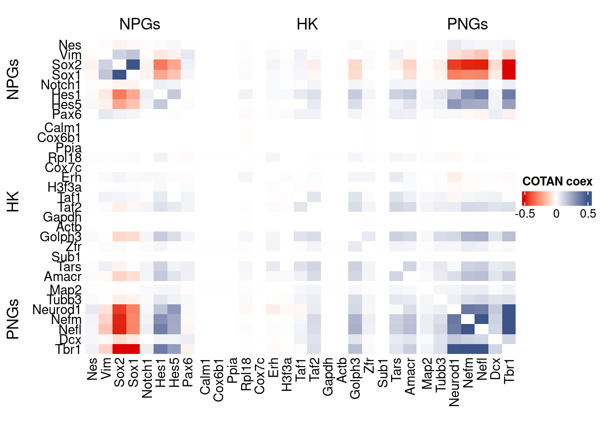
GDI_DF <- calculateGDI(obj)
GDI_DF$geneType <- NA
for (cat in names(genesList)) {
GDI_DF[rownames(GDI_DF) %in% genesList[[cat]],]$geneType <- cat
}
GDI_DF$GDI_centered <- scale(GDI_DF$GDI,center = T,scale = T)
GDI_DF[genesFromListExpressed,] sum.raw.norm GDI exp.cells geneType GDI_centered
Nes 7.820061 1.900830 0.8944678 NPGs -0.871345554
Vim 10.107014 3.181444 5.5697535 NPGs 0.182474165
Sox2 12.853814 5.770907 37.0490078 NPGs 2.313348117
Sox1 12.056209 5.111277 21.9858689 NPGs 1.770537644
Notch1 9.699973 2.336669 13.7251954 NPGs -0.512692454
Hes1 12.596730 5.186586 44.9939868 NPGs 1.832509351
Hes5 11.589148 4.436487 22.9404690 NPGs 1.215251364
Pax6 11.261901 2.691673 15.5968130 NPGs -0.220558963
Map2 15.280975 2.477719 99.7895370 PNGs -0.396622436
Tubb3 15.754578 3.964815 98.8800361 PNGs 0.827111800
Neurod1 12.791123 5.402042 27.1346963 PNGs 2.009808490
Nefm 14.447156 5.674770 60.6734817 PNGs 2.234236607
Nefl 15.029981 5.730876 69.0168370 PNGs 2.280406260
Dcx 13.446320 3.773516 59.3656043 PNGs 0.669691305
Tbr1 13.991470 6.108206 53.9010824 PNGs 2.590912312
Calm1 18.594259 -1.322100 100.0000000 hk -3.523500881
Cox6b1 16.745042 -1.322100 100.0000000 hk -3.523500881
Ppia 17.052527 -1.322100 100.0000000 hk -3.523500881
Rpl18 14.551924 2.484090 99.8120866 hk -0.391379443
Cox7c 15.344526 -1.322100 100.0000000 hk -3.523500881
Erh 14.020627 2.785797 99.7068551 hk -0.143104557
H3f3a 14.574384 1.831927 99.9248346 hk -0.928045741
Taf1 13.863292 3.621765 85.4479856 hk 0.544814867
Taf2 13.202130 4.172172 58.9747444 hk 0.997745814
Gapdh 17.522338 -1.322100 100.0000000 hk -3.523500881
Actb 16.759974 -1.322100 100.0000000 hk -3.523500881
Golph3 14.614692 4.902710 90.8523752 hk 1.598907319
Zfr 15.811962 2.951248 99.8271197 hk -0.006954689
Sub1 16.833884 -1.322100 100.0000000 hk -3.523500880
Tars 13.933987 4.661781 75.0300661 hk 1.400646595
Amacr 12.876022 4.641715 47.6172580 hk 1.384133762
Reln 14.617091 4.535394 33.1554420 layers 1.296642311
Cux1 13.648245 3.812293 64.4693325 layers 0.701600676
Satb2 13.730509 6.092801 51.5484065 layers 2.578235326
Tle1 13.161724 4.144245 48.5868912 layers 0.974764993
Mef2c 16.614479 3.089237 98.6921227 layers 0.106597177
Rorb 13.722332 4.633003 26.7964522 layers 1.376964661
Sox5 13.455160 4.645983 57.4639206 layers 1.387646071
Bcl11b 13.349586 4.895035 58.0802766 layers 1.592591440
Fezf2 13.792052 5.014168 24.7218882 layers 1.690626482
Foxp2 12.799630 4.541808 14.6422129 layers 1.301920122
Ntf3 9.830779 2.956402 2.6383043 layers -0.002713486
Rasgrf2 13.968932 4.148196 60.8313289 layers 0.978016058
Pvrl3 13.728510 3.930030 42.7615755 layers 0.798486944
Cux2 12.674550 4.288057 44.4527962 layers 1.093108316
Slc17a6 13.196851 5.057883 21.3770295 layers 1.726599252
Sema3c 13.975579 4.951969 29.1040289 layers 1.639442911
Thsd7a 13.816783 4.815967 37.0414913 layers 1.527526437
Sulf2 14.243064 4.605732 74.7820204 layers 1.354523058
Kcnk2 13.682822 3.909101 63.0712568 layers 0.781264429
Grik3 13.047606 4.757388 44.2423331 layers 1.479321213
Etv1 13.810025 4.022891 38.5372820 layers 0.874902363
Tle4 13.812397 4.451829 58.8018641 layers 1.227876359
Tmem200a 13.224283 3.266166 33.3358388 layers 0.252192440
Glra2 13.357891 4.652036 33.5538184 layers 1.392627309
Etv1.1 13.810025 4.022891 38.5372820 layers 0.874902363
Htr1f 12.656239 4.388355 33.4561034 layers 1.175643109
Sulf1 11.769481 4.973169 14.1912207 layers 1.656888255
Rxfp1 13.477533 3.712335 25.3607937 layers 0.619345738
Syt6 12.476583 3.661750 14.3866506 layers 0.577718593GDIPlot(obj,GDIIn = GDI_DF, genes = genesList,GDIThreshold = 1.4)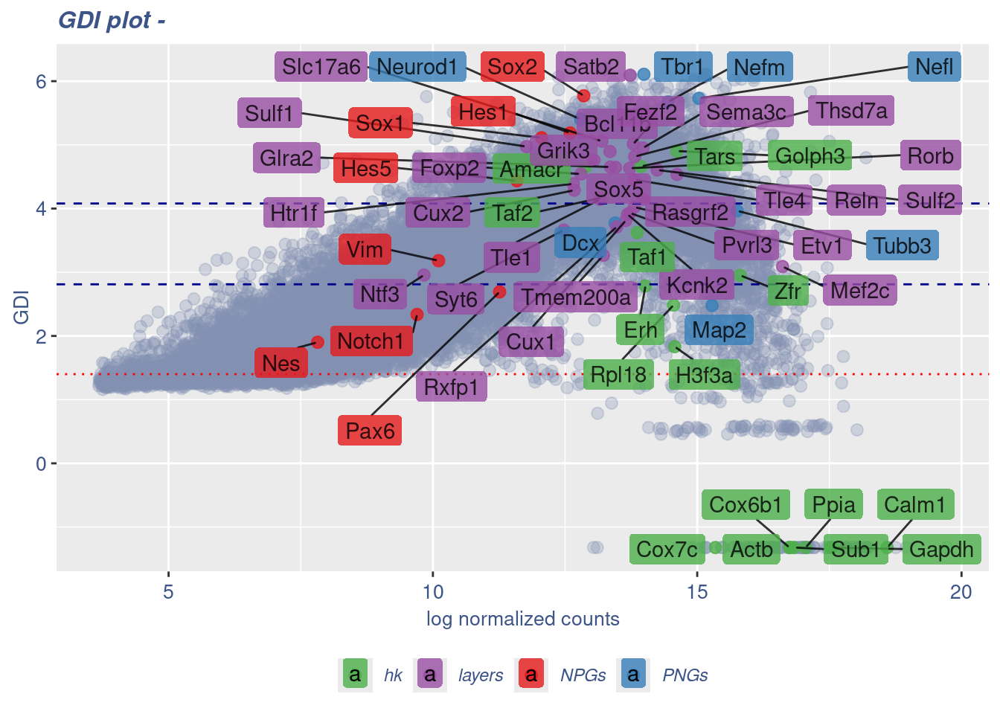
Seurat correlation
srat<- CreateSeuratObject(counts = getRawData(obj),
project = project,
min.cells = 3,
min.features = 200)
srat[["percent.mt"]] <- PercentageFeatureSet(srat, pattern = "^mt-")
srat <- NormalizeData(srat)
srat <- FindVariableFeatures(srat, selection.method = "vst", nfeatures = 2000)
# plot variable features with and without labels
plot1 <- VariableFeaturePlot(srat)
plot1$data$centered_variance <- scale(plot1$data$variance.standardized,
center = T,scale = F)
write.csv(plot1$data,paste0("CoexData/",
"Variance_Seurat_genes",
getMetadataElement(obj,
datasetTags()[["cond"]]),".csv"))
LabelPoints(plot = plot1, points = c(genesList$NPGs,genesList$PNGs,genesList$layers), repel = TRUE)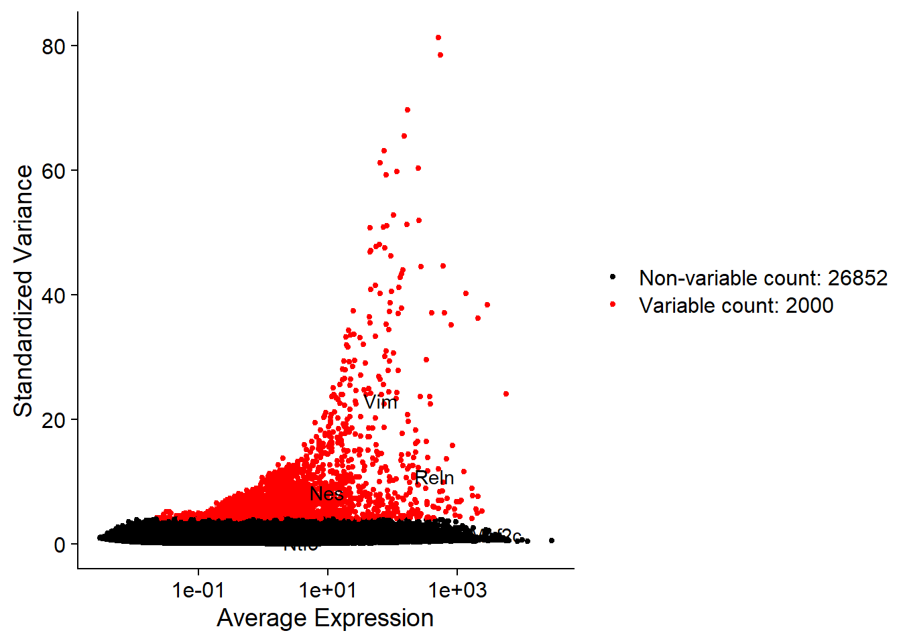
LabelPoints(plot = plot1, points = c(genesList$hk), repel = TRUE)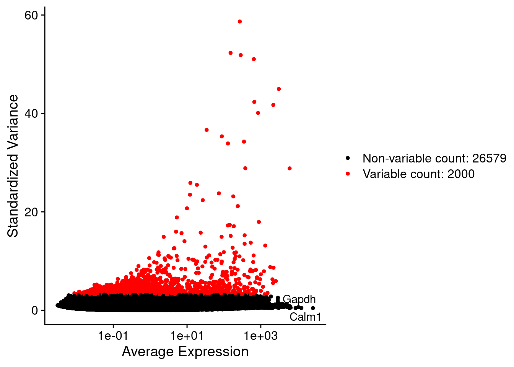
all.genes <- rownames(srat)
srat <- ScaleData(srat, features = all.genes)
seurat.data = GetAssayData(srat[["RNA"]],layer = "data")corr.pval.list <- correlation_pvalues(data = seurat.data,
genesFromListExpressed,
n.cells = getNumCells(obj))
seurat.data.cor.big <- as.matrix(Matrix::forceSymmetric(corr.pval.list$data.cor, uplo = "U"))
htmp <- correlation_plot(seurat.data.cor.big,
genesList, title="Seurat corr")
p_values.fromSeurat <- corr.pval.list$p_values
seurat.data.cor.big <- corr.pval.list$data.cor
rm(corr.pval.list)
gc() used (Mb) gc trigger (Mb) max used (Mb)
Ncells 10217394 545.7 17752210 948.1 17752210 948.1
Vcells 1529668547 11670.5 3229077099 24636.0 3229064963 24635.9draw(htmp, heatmap_legend_side="right")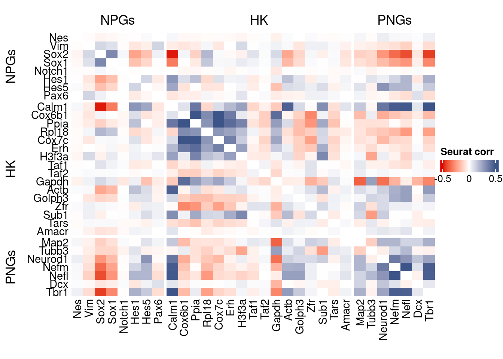
rm(seurat.data.cor.big)
rm(p_values.fromSeurat)Seurat SC Transform
srat <- SCTransform(srat,
method = "glmGamPoi",
vars.to.regress = "percent.mt",
verbose = FALSE)
seurat.data <- GetAssayData(srat[["SCT"]],layer = "data")
#Remove genes with all zeros
seurat.data <-seurat.data[rowSums(seurat.data) > 0,]
corr.pval.list <- correlation_pvalues(seurat.data,
genesFromListExpressed,
n.cells = getNumCells(obj))
seurat.data.cor.big <- as.matrix(Matrix::forceSymmetric(corr.pval.list$data.cor, uplo = "U"))
htmp <- correlation_plot(seurat.data.cor.big,
genesList, title="Seurat corr SCT")
p_values.fromSeurat <- corr.pval.list$p_values
seurat.data.cor.big <- corr.pval.list$data.cor
rm(corr.pval.list)
gc() used (Mb) gc trigger (Mb) max used (Mb)
Ncells 10545808 563.3 17752210 948.1 17752210 948.1
Vcells 2016702792 15386.3 4650047021 35477.1 4650043106 35477.1draw(htmp, heatmap_legend_side="right")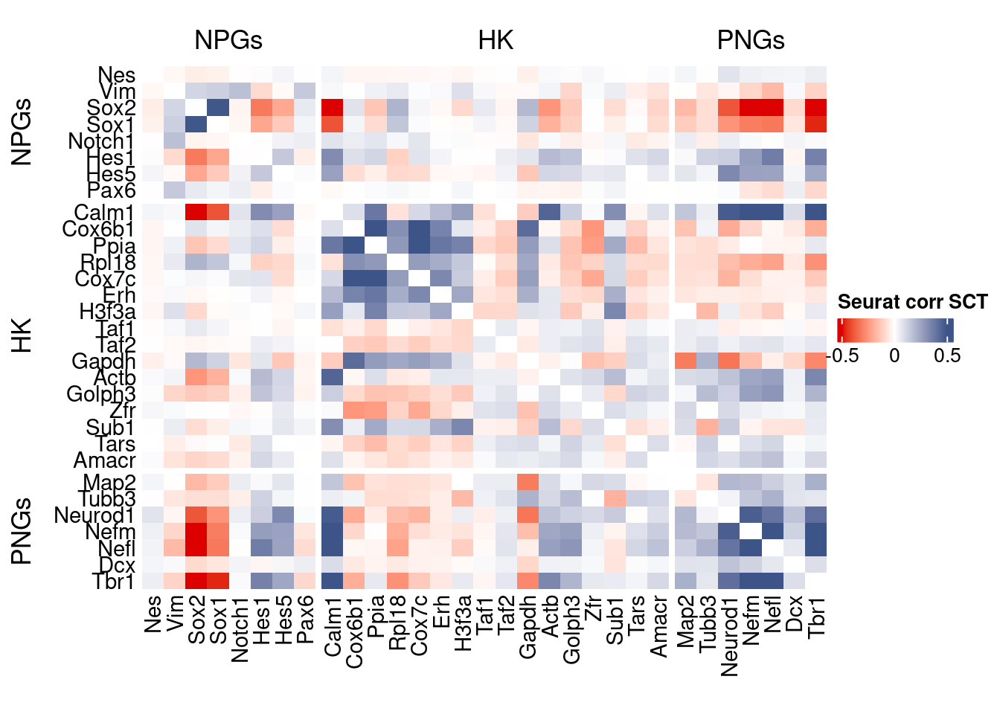
plot1 <- VariableFeaturePlot(srat)
plot1$data$centered_variance <- scale(plot1$data$residual_variance,
center = T,scale = F)write.csv(plot1$data,paste0("CoexData/",
"Variance_SeuratSCT_genes",
getMetadataElement(obj,
datasetTags()[["cond"]]),".csv"))
write_fst(as.data.frame(seurat.data.cor.big),path = paste0("CoexData/SeuratCorrSCT_",file_code,".fst"), compress = 100)
write_fst(as.data.frame(p_values.fromSeurat),path = paste0("CoexData/SeuratPValuesSCT_", file_code,".fst"))
write.csv(as.data.frame(p_values.fromSeurat),paste0("CoexData/SeuratPValuesSCT_", file_code,".csv"))
rm(seurat.data.cor.big)
rm(p_values.fromSeurat)Monocle
library(monocle3)cds <- new_cell_data_set(getRawData(obj),
cell_metadata = getMetadataCells(obj),
gene_metadata = getMetadataGenes(obj)
)
cds <- preprocess_cds(cds, num_dim = 100)
normalized_counts <- normalized_counts(cds)#Remove genes with all zeros
normalized_counts <- normalized_counts[rowSums(normalized_counts) > 0,]
corr.pval.list <- correlation_pvalues(normalized_counts,
genesFromListExpressed,
n.cells = getNumCells(obj))
rm(normalized_counts)
monocle.data.cor.big <- as.matrix(Matrix::forceSymmetric(corr.pval.list$data.cor, uplo = "U"))
htmp <- correlation_plot(data.cor.big = monocle.data.cor.big,
genesList,
title = "Monocle corr")
p_values.from.monocle <- corr.pval.list$p_values
monocle.data.cor.big <- corr.pval.list$data.cor
rm(corr.pval.list)
gc() used (Mb) gc trigger (Mb) max used (Mb)
Ncells 10732049 573.2 17752210 948.1 17752210 948.1
Vcells 2021293392 15421.3 4650047021 35477.1 4650043106 35477.1draw(htmp, heatmap_legend_side="right")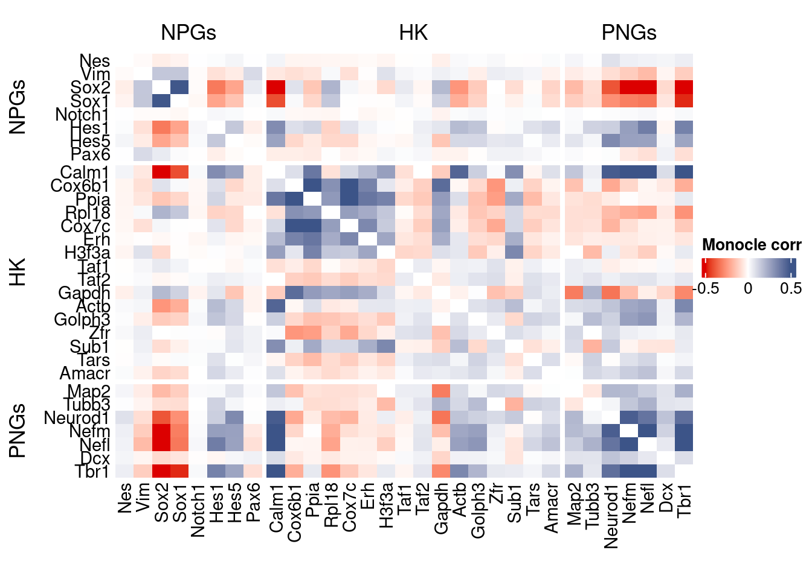
ScanPy
library(reticulate)
dirOutScP <- paste0("CoexData/ScanPy/")
if (!dir.exists(dirOutScP)) {
dir.create(dirOutScP)
}
if(Sys.info()[["sysname"]] == "Windows"){
use_python("C:/Users/Silvia/miniconda3/envs/r-scanpy/python.exe", required = TRUE)
#Sys.setenv(RETICULATE_PYTHON = "C:/Users/Silvia/AppData/Local/Python/pythoncore-3.14-64/python.exe" )
}else{
Sys.setenv(RETICULATE_PYTHON = "../../../bin/python3")
}
py <- import("sys")
source_python("src/scanpyGenesExpression.py")
scanpyFDR(getRawData(obj),
getMetadataCells(obj),
getMetadataGenes(obj),
"mt",
dirOutScP,
file_code,
int.genes)inizio
open pdfnormalized_counts <- read.csv(paste0(dirOutScP,
file_code,"_Scanpy_expression_all_genes.gz"),header = T,row.names = 1)
normalized_counts <- t(normalized_counts)#Remove genes with all zeros
normalized_counts <-normalized_counts[rowSums(normalized_counts) > 0,]
corr.pval.list <- correlation_pvalues(normalized_counts,
genesFromListExpressed,
n.cells = getNumCells(obj))
ScanPy.data.cor.big <- as.matrix(Matrix::forceSymmetric(corr.pval.list$data.cor, uplo = "U"))
htmp <- correlation_plot(data.cor.big = ScanPy.data.cor.big,
genesList,
title = "ScanPy corr")
p_values.from.ScanPy <- corr.pval.list$p_values
ScanPy.data.cor.big <- corr.pval.list$data.cor
rm(corr.pval.list)
gc() used (Mb) gc trigger (Mb) max used (Mb)
Ncells 10768469 575.1 29927633 1598.4 30242198 1615.2
Vcells 2409900545 18386.1 4650047021 35477.1 4650043106 35477.1draw(htmp, heatmap_legend_side="right")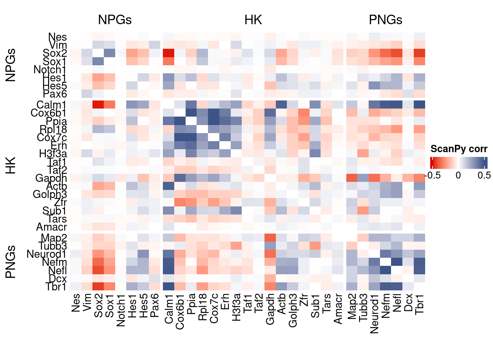
Cs-Core
devtools::load_all("../CS-CORE/")Convert to Seurat obj
sceObj <- convertToSingleCellExperiment(obj)
# Correct: assay=NULL (or omit), data=NULL (since no logcounts)
seuratObj <- as.Seurat(
x = sceObj,
counts = "counts",
data = NULL,
assay = NULL, # IMPORTANT: do NOT set to "RNA" here
project = "COTAN"
)
# as.Seurat(SCE) creates assay "originalexp" by default; rename it to RNA
seuratObj <- RenameAssays(seuratObj, originalexp = "RNA", verbose = FALSE)
DefaultAssay(seuratObj) <- "RNA"
# Optional: keep COTAN payload
seuratObj@misc$COTAN <- S4Vectors::metadata(sceObj)Extract CS_CORE corr matrix
#seuratObj@assays$RNA@counts <- ceiling(seuratObj@assays$RNA@counts)
csCoreRes <- CSCORE(seuratObj, genes = genesFromListExpressed)[INFO] IRLS converged after 2 iterations.
[INFO] Starting WLS for covariance at Sat Jan 24 13:46:53 2026
[INFO] 0.0565% co-expression estimates were greater than 1 and were set to 1.
[INFO] 0.0000% co-expression estimates were smaller than -1 and were set to -1.
[INFO] Finished WLS. Elapsed time: 2.0135 seconds.mat <- as.matrix(csCoreRes$est)
diag(mat) <- 0
split.genes <- base::factor(c(rep("NPGs",sum(genesList[["NPGs"]] %in% genesFromListExpressed)),
rep("HK",sum(genesList[["hk"]] %in% genesFromListExpressed)),
rep("PNGs",sum(genesList[["PNGs"]] %in% genesFromListExpressed))
),
levels = c("NPGs","HK","PNGs"))
f1 = colorRamp2(seq(-0.5,0.5, length = 3), c("#DC0000B2", "white","#3C5488B2" ))
htmp <- Heatmap(as.matrix(mat[c(genesList$NPGs,genesList$hk,genesList$PNGs),c(genesList$NPGs,genesList$hk,genesList$PNGs)]),
#width = ncol(coexMat)*unit(2.5, "mm"),
height = nrow(mat)*unit(3, "mm"),
cluster_rows = FALSE,
cluster_columns = FALSE,
col = f1,
row_names_side = "left",
row_names_gp = gpar(fontsize = 11),
column_names_gp = gpar(fontsize = 11),
column_split = split.genes,
row_split = split.genes,
cluster_row_slices = FALSE,
cluster_column_slices = FALSE,
heatmap_legend_param = list(
title = "CS-CORE", at = c(-0.5, 0, 0.5),
direction = "horizontal",
labels = c("-0.5", "0", "0.5")
)
)
draw(htmp, heatmap_legend_side="right")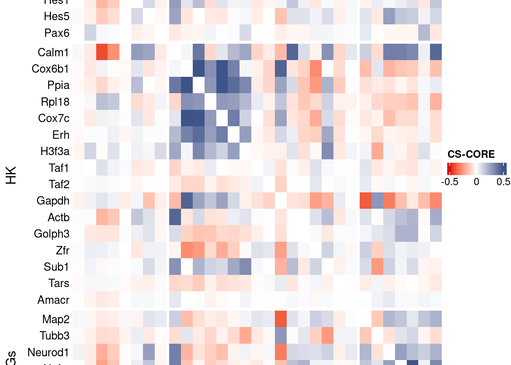
Save CS_CORE matrix
write_fst(as.data.frame(csCoreRes$est), path = paste0("CoexData/CS_CORECorr_", file_code,".fst"),compress = 100)
write_fst(as.data.frame(csCoreRes$p_value), path = paste0("CoexData/CS_COREPValues_", file_code,".fst"),compress = 100)
write.csv(as.data.frame(csCoreRes$p_value), paste0("CoexData/CS_COREPValues_", file_code,".csv"))Baseline: Spearman on UMI counts
corr.pval.list <- correlation_pvaluesSpearman(data = getRawData(obj),
genesFromListExpressed,
n.cells = getNumCells(obj))
data.cor.big <- as.matrix(Matrix::forceSymmetric(corr.pval.list$data.cor, uplo = "U"))
htmp <- correlation_plot(data.cor.big,
genesList, title="UMI baseline S. corr")
p_values.fromSp.C <- corr.pval.list$p_values
data.cor.bigSp.C <- corr.pval.list$data.cor
rm(corr.pval.list)
gc() used (Mb) gc trigger (Mb) max used (Mb)
Ncells 10896366 582.0 29927633 1598.4 30242198 1615.2
Vcells 2411284903 18396.7 4650047021 35477.1 4650043106 35477.1draw(htmp, heatmap_legend_side="right")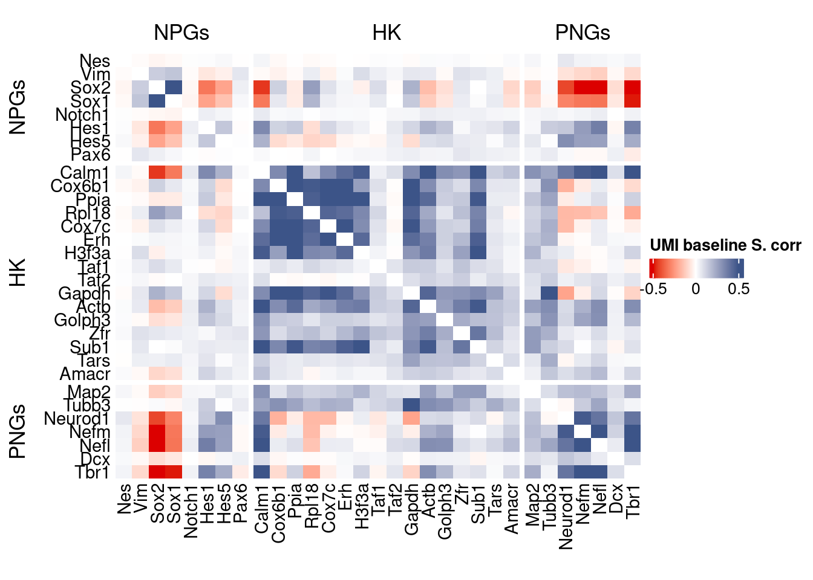
write.csv(as.data.frame(p_values.fromSp.C), paste0("CoexData/BaselineUMISpCorrPValues_", file_code,".csv"))Baseline: Pearson on binarized counts
correlation_pvalues <- function(data,int.genes, n.cells){
data <- t(as.matrix(data)[rownames(data) %in% int.genes,])
data.cor <- fastCor(data,upperTri = T,verbose = T,optBLAS = T)
data.cor <- Matrix::forceSymmetric(data.cor, uplo = "L")
diag(data.cor) <- 1
data.cor[is.na(data.cor)] <- 0
temp <- ((data.cor)**2)*n.cells
p_values <- pchisq(as.matrix(temp), df = 1L, lower.tail = FALSE)
#diag(p_values) <- 1.0
return(list("data.cor"= data.cor,"p_values"=p_values))
}
corr.pval.list <- correlation_pvalues(data = getZeroOneProj(obj),
genesFromListExpressed,
n.cells = getNumCells(obj))---> Checking zero-variance data...
---> Total number of variables: 59
---> WARNING: 7 variables found with zero variancedata.cor.big <- as.matrix(Matrix::forceSymmetric(corr.pval.list$data.cor, uplo = "U"))
htmp <- correlation_plot(data.cor.big,
genesList, title="Zero-one P. corr")
p_values.fromSp.C <- corr.pval.list$p_values
data.cor.bigSp.C <- corr.pval.list$data.cor
rm(corr.pval.list)
gc() used (Mb) gc trigger (Mb) max used (Mb)
Ncells 10896674 582.0 29927633 1598.4 30242198 1615.2
Vcells 2411285433 18396.7 4650047021 35477.1 4650043106 35477.1draw(htmp, heatmap_legend_side="right")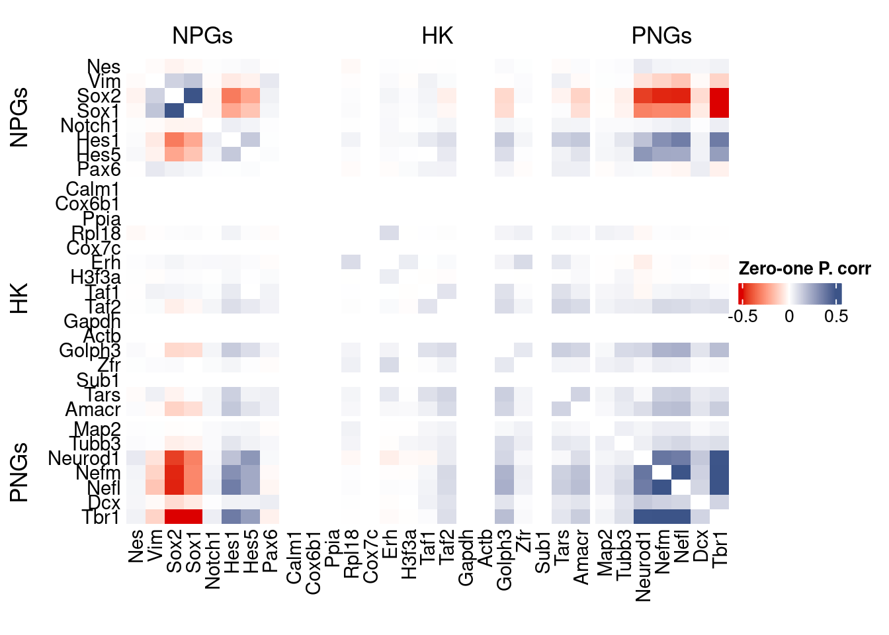
write.csv(as.data.frame(p_values.fromSp.C), paste0("CoexData/ZeroOnePCorrPValues_", file_code,".csv"))Sys.time()[1] "2026-01-24 13:47:08 CET"sessionInfo()R version 4.5.2 (2025-10-31)
Platform: x86_64-pc-linux-gnu
Running under: Ubuntu 22.04.5 LTS
Matrix products: default
BLAS: /usr/lib/x86_64-linux-gnu/blas/libblas.so.3.10.0
LAPACK: /usr/lib/x86_64-linux-gnu/lapack/liblapack.so.3.10.0 LAPACK version 3.10.0
locale:
[1] LC_CTYPE=C.UTF-8 LC_NUMERIC=C LC_TIME=C.UTF-8
[4] LC_COLLATE=C.UTF-8 LC_MONETARY=C.UTF-8 LC_MESSAGES=C.UTF-8
[7] LC_PAPER=C.UTF-8 LC_NAME=C LC_ADDRESS=C
[10] LC_TELEPHONE=C LC_MEASUREMENT=C.UTF-8 LC_IDENTIFICATION=C
time zone: Europe/Rome
tzcode source: system (glibc)
attached base packages:
[1] stats4 parallel grid stats graphics grDevices utils
[8] datasets methods base
other attached packages:
[1] CSCORE_1.0.2 testthat_3.3.2
[3] reticulate_1.44.1 monocle3_1.3.7
[5] SingleCellExperiment_1.32.0 SummarizedExperiment_1.38.1
[7] GenomicRanges_1.62.1 Seqinfo_1.0.0
[9] IRanges_2.44.0 S4Vectors_0.48.0
[11] MatrixGenerics_1.22.0 matrixStats_1.5.0
[13] Biobase_2.70.0 BiocGenerics_0.56.0
[15] generics_0.1.3 fstcore_0.10.0
[17] fst_0.9.8 stringr_1.6.0
[19] HiClimR_2.2.1 doParallel_1.0.17
[21] iterators_1.0.14 foreach_1.5.2
[23] Rfast_2.1.5.1 RcppParallel_5.1.10
[25] zigg_0.0.2 Rcpp_1.1.0
[27] patchwork_1.3.2 Seurat_5.4.0
[29] SeuratObject_5.3.0 sp_2.2-0
[31] Hmisc_5.2-3 dplyr_1.1.4
[33] circlize_0.4.16 ComplexHeatmap_2.26.0
[35] COTAN_2.11.1
loaded via a namespace (and not attached):
[1] fs_1.6.6 spatstat.sparse_3.1-0
[3] devtools_2.4.5 httr_1.4.7
[5] RColorBrewer_1.1-3 profvis_0.4.0
[7] tools_4.5.2 sctransform_0.4.2
[9] backports_1.5.0 R6_2.6.1
[11] lazyeval_0.2.2 uwot_0.2.3
[13] ggdist_3.3.3 GetoptLong_1.1.0
[15] urlchecker_1.0.1 withr_3.0.2
[17] gridExtra_2.3 parallelDist_0.2.6
[19] progressr_0.18.0 cli_3.6.5
[21] Cairo_1.7-0 spatstat.explore_3.6-0
[23] fastDummies_1.7.5 labeling_0.4.3
[25] S7_0.2.1 spatstat.data_3.1-9
[27] proxy_0.4-29 ggridges_0.5.6
[29] pbapply_1.7-2 foreign_0.8-90
[31] sessioninfo_1.2.3 parallelly_1.46.0
[33] rstudioapi_0.18.0 shape_1.4.6.1
[35] ica_1.0-3 spatstat.random_3.4-3
[37] distributional_0.6.0 dendextend_1.19.0
[39] Matrix_1.7-4 abind_1.4-8
[41] lifecycle_1.0.4 yaml_2.3.10
[43] SparseArray_1.10.8 Rtsne_0.17
[45] glmGamPoi_1.20.0 promises_1.5.0
[47] crayon_1.5.3 miniUI_0.1.2
[49] lattice_0.22-7 beachmat_2.26.0
[51] cowplot_1.2.0 magick_2.9.0
[53] zeallot_0.2.0 pillar_1.11.1
[55] knitr_1.50 rjson_0.2.23
[57] boot_1.3-32 future.apply_1.20.0
[59] codetools_0.2-20 glue_1.8.0
[61] spatstat.univar_3.1-6 remotes_2.5.0
[63] data.table_1.18.0 vctrs_0.7.0
[65] png_0.1-8 spam_2.11-1
[67] Rdpack_2.6.4 gtable_0.3.6
[69] assertthat_0.2.1 cachem_1.1.0
[71] xfun_0.52 rbibutils_2.3
[73] S4Arrays_1.10.1 mime_0.13
[75] reformulas_0.4.1 survival_3.8-3
[77] ncdf4_1.24 ellipsis_0.3.2
[79] fitdistrplus_1.2-2 ROCR_1.0-11
[81] nlme_3.1-168 usethis_3.2.1
[83] RcppAnnoy_0.0.22 rprojroot_2.1.1
[85] GenomeInfoDb_1.44.0 irlba_2.3.5.1
[87] KernSmooth_2.23-26 otel_0.2.0
[89] rpart_4.1.24 colorspace_2.1-1
[91] nnet_7.3-20 tidyselect_1.2.1
[93] compiler_4.5.2 htmlTable_2.4.3
[95] desc_1.4.3 DelayedArray_0.36.0
[97] plotly_4.11.0 checkmate_2.3.2
[99] scales_1.4.0 lmtest_0.9-40
[101] digest_0.6.37 goftest_1.2-3
[103] spatstat.utils_3.2-1 minqa_1.2.8
[105] rmarkdown_2.29 XVector_0.50.0
[107] htmltools_0.5.8.1 pkgconfig_2.0.3
[109] base64enc_0.1-3 lme4_1.1-37
[111] sparseMatrixStats_1.20.0 fastmap_1.2.0
[113] rlang_1.1.7 GlobalOptions_0.1.2
[115] htmlwidgets_1.6.4 ggthemes_5.2.0
[117] UCSC.utils_1.4.0 shiny_1.12.1
[119] DelayedMatrixStats_1.30.0 farver_2.1.2
[121] zoo_1.8-14 jsonlite_2.0.0
[123] BiocParallel_1.44.0 BiocSingular_1.26.1
[125] magrittr_2.0.4 Formula_1.2-5
[127] GenomeInfoDbData_1.2.14 dotCall64_1.2
[129] viridis_0.6.5 stringi_1.8.7
[131] brio_1.1.5 MASS_7.3-65
[133] pkgbuild_1.4.7 plyr_1.8.9
[135] listenv_0.10.0 ggrepel_0.9.6
[137] deldir_2.0-4 splines_4.5.2
[139] tensor_1.5 igraph_2.2.1
[141] spatstat.geom_3.6-1 RcppHNSW_0.6.0
[143] pkgload_1.4.0 reshape2_1.4.4
[145] ScaledMatrix_1.16.0 evaluate_1.0.5
[147] nloptr_2.2.1 httpuv_1.6.16
[149] RANN_2.6.2 tidyr_1.3.1
[151] purrr_1.2.0 polyclip_1.10-7
[153] future_1.69.0 clue_0.3-66
[155] scattermore_1.2 ggplot2_4.0.1
[157] rsvd_1.0.5 xtable_1.8-4
[159] RSpectra_0.16-2 later_1.4.2
[161] viridisLite_0.4.2 tibble_3.3.0
[163] memoise_2.0.1 cluster_2.1.8.1
[165] globals_0.18.0